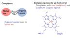

fltech - 富士通研究所の技術ブログ
https://blog.fltech.dev/
富士通研究所の研究員がさまざまなテーマで語る技術ブログ
フィード
Introducing Fujitsu KG Enhanced RAG (4 sessions) #2 Fujitsu KG Enhanced RAG for Q&A (Question&Answer)
fltech - 富士通研究所の技術ブログ
Hello. This is Narita , Fukui, and Peng from the Artificial Intelligence Laboratory. To promote the use of generative AI at enterprises, Fujitsu has developed an "Enterprise-wide Generateve AI Framework Technology" that can flexibly respond to diverse and changing corporate needs and easily comply w…
30分前
Fujitsu ナレッジグラフ拡張RAG技術のご紹介 #2 Fujitsu ナレッジグラフ拡張RAG for Q&A (Question&Answer)
fltech - 富士通研究所の技術ブログ
こんにちは。人工知能研究所の成田・福井・彭です。 富士通では企業における生成AIの活用促進に向けて、多様かつ変化する企業ニーズに柔軟に対応し、企業が持つ膨大なデータや法令への準拠を容易に実現する「エンタープライズ生成AIフレームワーク」を開発し、2024年7月よりAIサービス「Fujitsu Kozuchi」のラインナップとして順次提供を開始いたしました。 本記事では、このフレームワークを構成する「Fujitsu ナレッジグラフ拡張RAG for Q&A」についてご紹介いたします。
30分前

Reports on the 74th Conference of Japan Society of Coordination Chemistry: Chemical Analysis of Semiconductor Processes
fltech - 富士通研究所の技術ブログ
(Japanese version：https://blog.fltech.dev/entry/2024/10/15/sakutai74-ja) Hello. I'm Hiroyoshi Ohtsu from Devices & Materials Research Center. I have attended and presented at the 74th Conference of Japan Society of Coordination Chemistry held at Gifu University and Nagaragawa International Conferenc…
3日前
錯体化学会第74回討論会に参加・発表しました ～半導体プロセスを化学分析する！～
fltech - 富士通研究所の技術ブログ
(English version is here: Reports on the 74th Conference of Japan Society of Coordination Chemistry: Chemical Analysis of Semiconductor Processes - fltech - 富士通研究所の技術ブログ) こんにちは。デバイス＆マテリアル研究センターの大津博義です。2024年9月18日から20日まで、岐阜大学および長良川国際会議場で開催された錯体化学会第74回討論会に参加、発表してきました。その中で、化合物半導体プロセスの化学分析に関する成果を発表しましたので…
3日前
Introducing Fujitsu KG Enhanced RAG (4 sessions) #1 Fujitsu KG Enhanced RAG for RCA (Root Cause Analysis)
fltech - 富士通研究所の技術ブログ
Hello. I'm Kikuzuki from the Artificial Intelligence Laboratory. To promote the use of generative AI at enterprises, Fujitsu has developed a generative AI framework for enterprises that can flexibly respond to diverse and changing corporate needs and easily comply with the vast amount of data held b…
7日前
Fujitsu ナレッジグラフ拡張RAG技術のご紹介(全4回) #1 Fujitsu ナレッジグラフ拡張RAG for RCA (Root Cause Analysis)
fltech - 富士通研究所の技術ブログ
こんにちは。人工知能研究所の菊月です。 富士通では企業における生成AIの活用促進に向けて、多様かつ変化する企業ニーズに柔軟に対応し、企業が持つ膨大なデータや法令への準拠を容易に実現する「エンタープライズ生成AIフレームワーク」を開発し、2024年7月よりAIサービス Fujitsu Kozuchi (R&D) のラインナップとして順次提供を開始いたしました。 本記事では、このフレームワークを構成する「Fujitsu ナレッジグラフ拡張RAG for RCA (Root Cause Analysis)」についてご紹介いたします。（*1） *1:RAG技術：Retrieval Augmented …
7日前
AMCIS2024に参加・発表しました
fltech - 富士通研究所の技術ブログ
こんにちは、データ＆セキュリティ研究所の金子です。AMCIS2024に参加・発表してきたので、その内容を共有します。
9日前

Fujitsu Macquarie AI Research Lab：次世代の行動分析AI開発に向けた産学連携拠点
fltech - 富士通研究所の技術ブログ
皆さん、こんにちは！マッコーリー大学（オーストラリア・シドニー）のシュロモ・ベルコウスキと富士通研究所の竹内駿です。この記事では、富士通スモールリサーチラボ（SRL）の一つである、Fujitsu Macquarie AI Research Labでの活動を紹介したいと思います。 Fujitsu Macquarie AI Research Labは、2024年2月に正式に始動したSRLプログラムに最近加わった研究開発拠点の一つであり、アジア太平洋地域（日本を除く）および南半球における最初のSRLです。このラボの目的は野心的で、ヒューマンセンシングと生成AI技術を用いたパーソナライズされたデジタル…
14日前
Fujitsu Macquarie AI Research Lab: A novel collaborative project for next-generation behaviour analysis
fltech - 富士通研究所の技術ブログ
Hi there! We’re Shlomo Berkovsky from Macquarie University (Sydney, Australia) and Shun Takeuchi from Fujitsu Research. In this post, we’d like to introduce to you the work of Fujitsu Macquarie AI Research Lab, which is part of the broader Fujitsu’s Small Research Lab (SRL) program. Fujitsu Macquari…
14日前
HOT CHIPS2024に参加しました
fltech - 富士通研究所の技術ブログ
こんにちは、富士通研究所コンピューティング研究所の児玉宏喜です。文部科学省の科学技術試験研究委託事業「次世代基盤に係る調査研究」の一環として、2024年8月25日～27日にスタンフォード大学（アメリカ）で開催された国際会議HOT CHIPS 2024 (https://www.hotchips.org/) に現地参加し、コンピューティング基盤の動向調査を行ってきました。本投稿では、注目した論文やキーノートについて紹介します。
15日前
見守りの新時代：ミリ波センサーによるプライバシーを保護した見守り技術と応用
fltech - 富士通研究所の技術ブログ
こんにちは。コンバージングテクノロジー研究所の白石と吉岡です。私たちは、富士通のＡＩ技術と、行動科学や心理学などとのコンバージングテクノロジーの研究開発を行っています。その中から、ミリ波センサーを用いた見守り技術とその応用についてご紹介します。
21日前
DAC 2024に参加しました
fltech - 富士通研究所の技術ブログ
こんにちは、富士通研究所コンピューティング研究所の一場です。 今回は、2024年6月23日から27日までサンフランシスコで開催された国際会議 DAC2024 (https://www.dac.com/) に参加しましたので、キーノートや個人的に注目した論文について紹介します。また、私が現在カナダのトロントに赴任しているために起こったことについても少しだけ触れます。
1ヶ月前
“CLUMAP: Clustered Mapper for CGRAs with Predication” presented at DAC 2024
fltech - 富士通研究所の技術ブログ
Hello, I am Omar Ragheb from Computing Laboratory. Fujitsu have been developing reconfigurable architectures and CAD tools to accelerate AI workloads. In June 2024, we presented a mapping algorithm at the flagship DAC conference in the field of design automation.
1ヶ月前
Join DATACLOUD USA 2024
fltech - 富士通研究所の技術ブログ
Hello, I'm Koichi Fueda from the Advanced Technology Division of Fujitsu Laboratories. Fujitsu will be attending Datacloud USA 2024 (https://www.datacloud-usa.com/) in Austin, USA from 2024/09/17 - 18. In this exhibition, we will exhibit "Photonic disaggregated computer," a new computing platform cu…
1ヶ月前
IEEE WCCI2024にて、初期がんの早期発見への貢献が期待される「マルチスケールサンプリング手法を用いた微小病変に適した軽量な検出技術」を発表しました!
fltech - 富士通研究所の技術ブログ
こんにちは。コンバージングテクノロジー研究所の烏谷です。私たちの研究グループでは、初期がんの早期発見により５年生存率を向上させることを目指し、がん検出技術の開発を行っています。研究成果の一つを、IEEE WCCI 2024にて発表しましたので、その内容をご紹介します。
1ヶ月前
"LayeredLiNGAM: A Practical and Fast Method for Learning a Linear Non-Gaussian Structural Equation Model" presented at ECML-PKDD 2024
fltech - 富士通研究所の技術ブログ
Introduction Hello! I'm Suzuki from Artificial Intelligence Laboratory. We are conducting R&D on "Decision Making via Causal Discovery" and working on real-world decision-making tasks such as improving employee productivity based on engagement survey data. We are pleased to announce that our researc…
1ヶ月前
ECML-PKDD 2024 にて統計的因果探索の代表的モデル LiNGAM の高速な学習法 LayeredLiNGAM について発表しました
fltech - 富士通研究所の技術ブログ
はじめに こんにちは。人工知能研究所の鈴木です。富士通研究所では「因果探索を活用した意思決定」に関する研究開発を行っており、エンゲージメント調査データに基づく従業員の生産性向上など、現実の意思決定タスクに取り組んでいます。このたび、我々の研究成果である「線形非ガウス因果モデル LiNGAM における高速な因果探索技術」に関する研究論文が、機械学習・データマイニング分野の主要な国際会議である ECML-PKDD 2024 に採択されたので、その内容を紹介します。 対象論文 タイトル：LayeredLiNGAM: A Practical and Fast Method for Learning a…
1ヶ月前
”YolOOD: Utilizing Object Detection Concepts for Multi-Label Out-of-Distribution Detection” presented at CVPR 2024
fltech - 富士通研究所の技術ブログ
Hello, I am Satoru Koda at AI Laboratory. Fujitsu has been developing technologies for realizing the world where people can safely use AI. In June 2024, we presented our achievement at CVPR 2024, a flagship conference in the computer vision field.
2ヶ月前
CVPR2024 で "YolOOD: Utilizing Object Detection Concepts for Multi-Label Out-of-Distribution Detection" について発表しました
fltech - 富士通研究所の技術ブログ
こんにちは、人工知能研究所の江田です。富士通では、AIの安全な利用を可能にする技術の開発を行っています。 この度研究成果の一つを、機械学習・コンピュータビジョンの最難関会議の一つであるCVPRにて発表しましたので、その内容を紹介します。
2ヶ月前
Fujitsu Research of Europeのチームが ICLR 2024にて画像環境にデータを効率よく判定・適応するための新技術を発表
fltech - 富士通研究所の技術ブログ
こんにちは、Fujitsu Research of Europeのアブラ・チャウドゥリです。私は、コンピューティングを研究グループのシニアリサーチマネージャーとして、さまざまな状況でデータの分布が変化した時に、深層学習モデルがどのような反応をするかを研究しています。
3ヶ月前
Fujitsu Research of Europe team present new technology for data-efficient adaptation to new environments at ICLR 2024
fltech - 富士通研究所の技術ブログ
Hello! I am Abhra Chaudhuri, a Senior Researcher in the Computing Research Group at Fujitsu Research of Europe. I study the behaviour of deep neural networks under various kinds of distribution shifts.
3ヶ月前
ソーシャルデジタルツイン™︎ データ生成ツールを公開しました！
fltech - 富士通研究所の技術ブログ
コンバージングテクノロジー研究所の郭 兆功です。だいぶ間が空きましたがテックブログ記事3本目です。 我々のプロジェクトでは、開発したソーシャルデジタルツイン技術を Fujitsu Research Portal に公開しています。今回は、公開中のシェアドモビリティ最適配置デモアプリで、使用するデータファイル・設定ファイルが簡単に生成できるデータ生成ツールを開発しましたので、ご紹介します。
3ヶ月前
"Learning Decision Trees and Forests with Algorithmic Recourse" presented on ICML 2024
fltech - 富士通研究所の技術ブログ
Introduction Hi! This is Kentaro Kanamori from Artificial Intelligence Laboratory. We are conducting research and development on "XAI-based Decision-Making Assistant" and trying to apply our technologies to real decision-making tasks (e.g., discovering actions for imprving employees' productivity fr…
3ヶ月前
ICML2024 にて「アクション説明を考慮した決定木および木アンサンブルの学習技術」について発表します
fltech - 富士通研究所の技術ブログ
はじめに こんにちは．人工知能研究所の金森です． 富士通研究所では「説明可能AI（XAI）技術を用いた意思決定支援」に関する研究開発を行っており，現実世界の意思決定タスクへの適用（例えば，エンゲージメント調査データに基づいた従業員の生産性向上アクションの発見）に取り組んでいます． このたび，我々の研究成果である「アクション説明を考慮した決定木および木アンサンブルの学習技術」に関する研究論文が，機械学習分野の主要な国際会議である ICML2024 に spotlight 論文（投稿論文の上位3.5%！） として採択されたので，その内容を紹介します． 対象論文 タイトル: Learning Dec…
3ヶ月前
ASCII×Microsoft の生成AIコンテスト「AI Challenge Day」参加レポート
fltech - 富士通研究所の技術ブログ
こんにちは、DS)DI Platform事業部 Kozuchi delivery Group の仲程凜太朗です。2024/04/18～4/19に神戸にあるMicrosoft AI Co-Innovation Labs Japanで開催された ASCII × Microsoft が主催している RAG の精度向上コンテスト、「AI Challenge Day」に参加してきました。 富士通からは、Kozuchi Conversational Generative AIの開発メンバーの 技術戦略本部 ＳＭＥ推進統括部 岡元大輔、越智諒、 DS)DI Platform事業部 Kozuchi deliv…
3ヶ月前
1st place in the 3D Human Pose Estimation on H3WB
fltech - 富士通研究所の技術ブログ
Hello, I am Xiantan Zhu, a researcher from FUJITSU RESEARCH & DEVELOPMENT CENTER (FRDC). Recently, we got the top-1 place on H3WB (Human3.6M 3D WholeBody, https://paperswithcode.com/sota/3d-human-pose-estimation-on-h3wb). Our result is far superior to the second place. In this blog, I will introduce…
3ヶ月前
メディカルAI学会に参加・発表しました ～動向と反響～
fltech - 富士通研究所の技術ブログ
コンピューティング研究所の「ゲノムAI」チームです。 本チームは、ゲノムデータを対象としたさまざまなAIを開発しているチームになります。 この度、チームメンバーで「第6回日本メディカルAI学会学術集会」に参加してきたのでその報告を行います。開発中の成果を広くアピールしつつ、医療現場の方からフィードバックを得ることを目的に、発表をしてきました。
3ヶ月前
"Selective Mixup Fine-Tuning for Optimizing Non-Decomposable Objectives" presented at ICLR 2024
fltech - 富士通研究所の技術ブログ
Overview Hi! I am Sho Takemori from AI Innovation Core Project, Artificial Intelligence Laboratory. Recently, in our joint research with the Indian Institute of Science (IISc), we have developed an AI technology termed SelMix that enables an efficient optimization of real-world, complex performance …
3ヶ月前
ICLR 2024で"Selective Mixup Fine-Tuning for Optimizing Non-Decomposable Objectives"について発表しました
fltech - 富士通研究所の技術ブログ
こんにちは。AIイノベCPJの竹森です。 富士通研究所とインド理科大学院(Indian Institute of Science)との共同研究において、画像分類タスクなどのための、複雑だが実用上重要な評価指標の効率的な最適化を可能にするAI技術を開発し、ICLR 2024 でspotlightとして発表したので、この技術ブログで発表内容について解説します。 採択論文 タイトル: Selective Mixup Fine-Tuning for Optimizing Non-Decomposable Objectives 国際会議: The Twelfth International Confer…
3ヶ月前
Revolutionizing Cancer Genomics: The Power of XAI and Knowledge Graphs
fltech - 富士通研究所の技術ブログ
Hello, I'm Katsuhiko Murakami from the Genome AI Team at the Computing Laboratory. We've developed the world's first Explainable AI (XAI) for fusion genes, integrating XAI with knowledge graphs. Our research has been published in the cancer journal Cancers (Basel) (Impact Factor 5.2): "Pathogenicity…
3ヶ月前